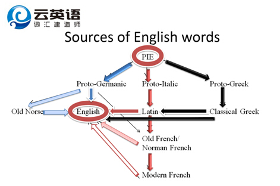
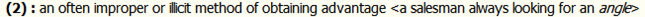
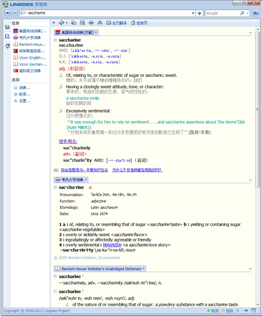
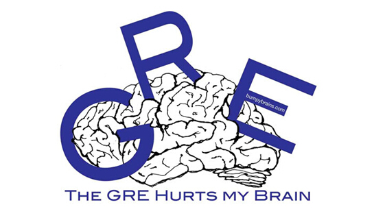
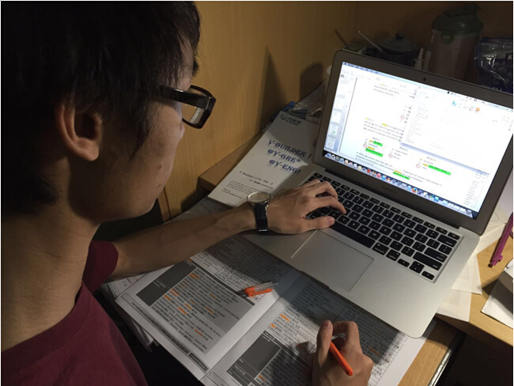
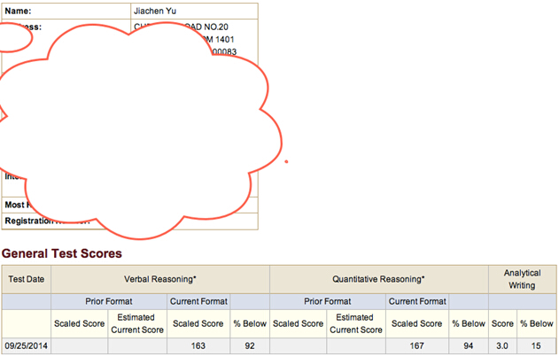
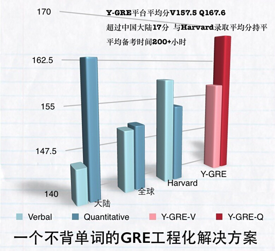

云英语
云英语：因学术而改变

考试时间：2014.09.25（交大考场）
考试分数：V163 Q167 AW3.0
备考时间：VB100h + Y-GRE100h
引言：本文是我在云英语前后约10个月一点个人的学习心得和体会。这些体会全部是我的一家之言，可能不具有代表性或指导意义，也并不足以作为"成功经验"来学习，只是供在云英语学习的同学们作为参考和借鉴。之前已经有诸多大神写下了他们的成功经验，在云英语的主页上均可查看。在我准备GRE的过程中，他们的分享给了我很多启发，因此我很推荐同学们多多参考一下他们的经验贴。 而我也将着重悔过一下我在学习VB和GRE中犯下的错误，作为反面教材来填补目前经验贴中的空缺，供各位同学引以为戒。
一. V-Builder：词汇学习也可以自成体系
我最早是通过高中同学的介绍了云英语（Y-English.org）这个机构。它独特的基于词源学的单词体系和"不用死记硬背的单词解决方案"让我感到excited。之后我才了解到这里出产过GRE Verbal满分，这对准备出国留学，势必要面对GRE的我来说也是一个很大的吸引。于是，在大一的寒假，我与同院几位同学一起注册参加了VB词汇建造师和Y-GRE平台的研修。
（http://wenku.baidu.com/view/eab1d3df28ea81c758f5783a.html）
V-Builder首先从词源学的基础姿势讲起，包括语言发展，发音演变，词根词缀总论等。在此基础上，再按照类别循序渐进逐级深入地从PIE词基出发对各个词根的派生词进行系统讲授，帮助建立起系统的学术阅读词汇体系。这种方法的确可以使单词学习的效率有很大提高。
一方面，通过词源认知单词可以"望文生义"，举一反三。这在各专业类的学术阅读词汇中尤其明显。其实，按正常的认知习惯，单词见得多了之后会，我们会自然而然地去拆解词根。但这种民科词源学(folk etymology)显然是不够系统和科学的。所以在实际应用的时候也难免捉襟见肘，错漏百出。比如，只要认识resist"抵抗"，就自然知道irresistible"无法抗拒的"；认识man，就不会去背什么叫manly"男子气的"。但是，鬼知道nonchalant是否定了什么-chal-；saccharine凭什么就是"甜的"，甚至是甜得很假让人腻歪？所以，虽然我们想这样自然而然地认知更多的英文，但显然因为某种因素的阻碍（用脚想都知道这种因素是存在的），导致潜力没有完全发掘出来，甚至10%都不到。而VB正是帮我们去除这个阻碍因素的。通过VB基于历史比较方法和词源学的系统化学习，我们可以基于语音学的基本知识，对常见词根（不是词汇书上那种完全不知所云的鬼好么）和它们的各种变形表现有高一个数量级的认知和掌握。这简直是神技能，用来对付像TOEFL这样纯粹的语言能力测试完全是西瓜切菜；自然科学阅读中出现的那些"生词"大多都可以很轻松地拼出来，只要认识词能读懂基本就没有难度了。
然而，GRE考试或者学术阅读对词汇能力的要求不只如此。只靠词源知道大概意思是不够用的。一方面在于把词根简单粗暴地拼接相加并不等同于整体单词的意思，比如和victory同源的单词中，vanquish是战胜/征服，invincible是不可被战胜/征服的，但conviction却并不是征服的意思，而是"信服（坚定的想法和信念）"/"判罪"[使服(于辩论)使知错使知罪宣判有罪]；而且，另一方面，单词（科学术语除外）的意思如果离开语境就完全不能得到充分体现。这样即便背了单词书，遇到逼格稍高的句子还是要傻眼的。比如像下面这样，即便每个词都认识，还是不懂在说什么。
For some time now, disinterestedness has been presumed not to exist: the cynical conviction that everybody has an angle is considered wisdom.
实际上，由于VB的设计是高度基于语境的，能够很好地解决词义的漂移和分化问题。很多单词中的词根，不仅由于流传、借用等等原因，经历了形式的变化；而且含义也发生了演进、分化和漂移。虽然乍看起来无从分辨，但是这个发展和演化是有逻辑的，而这种逻辑又是具有一定普遍性的。因为VB可以展示大量单词的含义演化过程，这就能够让我们在耳濡目染之间了解词义演化的基本方向和特点。这不但有助于记忆，也让我们能对单词的含义谱有更全面的理解。因为从演化的观点来看，一个单词的诸多含义——不论相差多远——都是有内在逻辑关系的。尽管有些逻辑看起来很牵强，但如果考虑历史的进程，按西方的那一套思考方式来思考的话，大部分的逻辑还是很自洽的。
当然，即便在VB的框架之下，学习单词也免不了记忆。即便是数学这样的理科，也有要记忆的公式。我们之所以觉得数学物理的公式、定理比较好记，除了少以外，很大的原因是我们能够用逻辑去把握，而不是像背红宝一样用极其粗暴的方法强行记住。VB带给我们的帮助也是类似的：通过学习词根的意思和词义的演化逻辑，以及西方人一些奇奇怪怪的思维方式，我们的记忆过程从死记硬背变得有逻辑、有章法。
我们往往觉得用谐音记单词很牢固，比如pregnant（扑来个男的），虽然看起来非常傻（实际上也很傻），但是很有效（笑）果。我们再看到这个单词时，会不由自主地重复读音->谐音（笑）->解读->词义的过程。词根记忆其实与其颇为类似：拆解->词根意思->演化或者某种逻辑关系->词义。比如：naysayer->nay=no;say=say;-er=人->总是说no的人->爱唱反调的人。这种程序性的记忆方法我想可能比死记硬背要温柔许多。像前面提到的nonchalant其实是non-chal[~calorie热量单位]-ant不热的->cool->淡定的；saccharine其实就是sugar的变体，名词是succharin糖精，形容词就是特别甜的，甚至是甜得很假令人腻歪。
除此之外，很多单词涉及到的历史背景也在VB中有所涉及，李浩老师也会为一些特殊单词设计奇葩的联想记忆方法（比如讲故事、表演），这些都能为我们的Recall过程增加程序性，降低难度。而且，上面提到的词根和演化知识，我们可以自己为见到的新词建立一套回忆方法，这可以带来更长久的帮助。
因此，我强烈推荐大家在学习VB的时候多查词源字典和韦氏、美国传统。使用lingoes是个技术活，大家不会的要去问子聪老师。一旦养成习惯以后，很多单词会在不知不觉中记住。我学VB的时候常常偷懒查中文词典，现在想来实在是失策，大家务必引以为戒。
另外，VB的学习还是最好循序渐进，不宜长时间搁置，放长线钓大鱼的话务必定期复习，否则大鱼不一定钓的到，放出去的线估计也收不回来了。我曾经因为课多（懒）搁置了三个月，其后果惨不忍睹。不过VB在这方面也有优越性——大部分单词能比较快地捡起来，如果是背红宝的话恐怕就真的要回到解放前了。
二. Y-GRE：系统化GRE解决方案
GRE Verbal部分对于美国人来说着重考察逻辑（或者说批判性思维和分析），这也是GRE考试的设计初衷。但天朝大学生往往壮志未酬身先死，虽有出色的逻辑思维，奈何单词不认识，啥都看不懂，即便看懂了，选项也不认识。不过仍然得强调，即便单词关过了，GRE在语义逻辑上的难度也是不容小觑的。
因此我在Y-GRE平台大概做了三件事：一是系统学习单词，解决单词问题；二是预测式阅读方法；三是学科背景预处理。如果说还有一点就是系统的模考和评价反馈体系，这个对临场策略的不断改进和随时把握自己水平有很大的帮助。
Y-GRE针对GRE考试，因此显得没有VB那样按部就班，系统性强。但是它的单词讲解非常注重精细词义辨析、实际语境的结合和含义谱的完整性，让我们真正地"认识"一个单词。这一方面是通过讲解，另一方面是通过被各种题目教做人。这时我才发现，由于以前不查韦氏，很多自以为"认识"的单词其实根本不认识——career有"速度"的意思，without有"在外部"的意思，want有"不足"的意思。而基于VB的词汇讲解能让多种含义之间建立关联，理解起来也就更加全面。
而且在实际练习的过程中，许多重要单词的复现率很高，不知不觉中就记住了；而且由于出现时伴随语境，理解上会更准确。查韦氏中的近反义词和相关词辨析也很重要，不仅提高复现率，而且帮助掌握一个单词的完整含义谱。很遗憾，这也是我学了很久之后才发现的。希望大家引以为戒，尽早养成查韦氏的习惯。
对于提升阅读能力，Y-GRE提供的解决办法是：预测式图景阅读。这个东西在我看来比词根那一套更抽象一些，我到了临考试前才感觉参悟出了一点点玄机。就我个人的理解，预测式阅读是通过语段Pattern的积累、培养对带有"言外之意"、"褒贬色彩"等关键词的敏感性、对语段中Paraphrase的敏感性和对Parakey的快速定位能力，来提高对逻辑结构复杂的语段的领悟力。这个技术需要积累才能掌握。我因为入学时阅读能力和语感较好，常常在做题时靠语感。后来发现这样下来，原来做不对的题还是做不对，GRE所特别要求的阅读能力提升并不明显。因此我强烈建议大家贯彻图景阅读方法。尽管我认为凭语感严格来讲并不算错误的方法（可能比较接近Native Speaker的读法），但是需要大量阅读才能提升，这对时间紧张的GRE备考者来说可能要求过高，而且更容易出错，不够稳定。
学科背景预处理，也就是按照学科分类把练习题归纳，再配合科普性的讲解。这个设计让我非常赞叹。GRE尽管号称不需要学科背景，但它往往是不需要知道具体知识，而不是不需要知道某个学科中常见的思维方式。这些思维方式的突出特点是客观、批判、全面地看待问题，也就是GRE所希望考察的critical thinking能力。尽管他们的内核可能是普适的，但在不同学科中会有不同的具体体现。比如客观与主观的辩证关系，在物理学中可能体现为"实验结果尽管一般被认为是完全客观的，但事实上往往会受实验者主观的影响"，在文学中可能体现为"口述传记不可避免地掺杂进记录者的态度，因而难以客观还原本意"，等等。通过背景的预处理，再加上GRE惯用pattern的积累，很多看似不知所云的阅读便很容易理解了。
除此之外，按学科的模块划分和百科全书式的讲解，令我们可以对自己专业以外各学科的总体概貌、关注问题、重要思想等有一个了解，扩充知识面。这种帮助绝对不是只局限在GRE考试范围之内的。这里不得不佩服李浩老师渊博的知识和鞭辟入里的讲解，也不得不承认GRE考试的B格还是比较高的，比TOEFL不知要高到哪里去了。
这样，通过以上几方面科学系统的训练，我们就逐渐地能够揣摩出GRE出题的一般套路和惯用伎俩，甚至在刚看了句子开头就可以窃笑"ETS这家伙又在搞这套"。这种考试技术层面的提升对于最终目标成绩的达成也是很有帮助的。
三. 有关GRE考试其他方面的准备
1.数学
GRE的数学的确非常菜，难度大约是初中数学的基础题难度，应当不超过一元二次函数解应用题。
什么，你问我为什么数学没满分？
......
首先值得大家借鉴的一点是，GRE数学虽菜，但是有不少陷阱，千万不要因为题干不是母语（又不仔细读题）造成理解上的失误和疏漏。其次，不可掉以轻心，认真检查，剩十几分钟就continue这种属于自败人品，显得诚意不够。最后，还是不要掉以轻心，从一开始就要足够谨慎，不要像我一样第一个Section第一题就错了...
准备方面，OG里的Math Conventions很值得过一遍，这样就不太可能遇到不知道在说什么的东西了。
2.作文
对于4分以下的作文水平，只需搞清楚题目要求，掌握几种套路。考场上码字的速度是决定3还是3.5的关键因素。此外，能挤出几分钟构思一下结构、行文思路也是很好的。
最后，好像有点跑题，还要再说一遍。建议大家不要死记硬背任何形式的单词书。我高中时too young, too simple，背了半天红宝，后来发现记住的寥寥无几，因为既无逻辑又无复现，即便记住了对做GRE的题也很难有帮助。
以上就是我在云英语学习的一点心得体会。我在大一暑假集中准备了三个月左右，考试时间2014-9-25，北京交通大学考场。最后的考试成绩：
很惭愧，写了一点微小的经验，谢谢大家！
Acknowledgement
感谢云英语机构为我们打造的"V-Builder词汇建造师"和"Y-GRE"，它们让我最终成功逃出了GRE的魔掌。感谢李浩老师精彩的讲解和为云英语投入的巨大心血。感谢子聪对我及时全方面的关照、指导、督学和帮助。感谢泰涵、堃神等各位老师为我不厌其烦地协调ipad、解决问题。感谢同院的李枝蔚学姐和同高中毕业的王晓玮学长，我未经许可擅自借鉴了经验贴。最后祝云英语越办越好！
版权所有 2011-2015 北京云英一语教育咨询有限公司 Y-English All Rights Reserved
地址：北京市海淀区五道口华清嘉园商务会馆802
电话：400-876-3898 010-82863898 82863899 传真：010-82863897